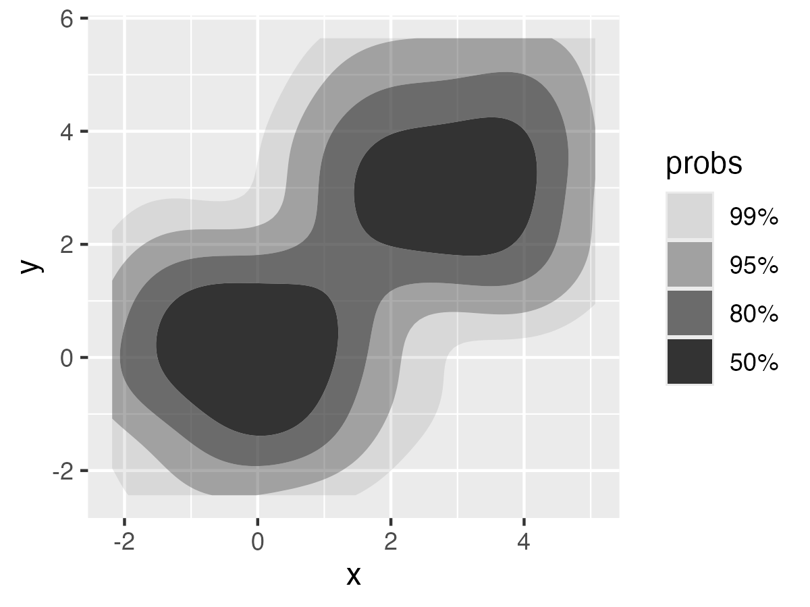
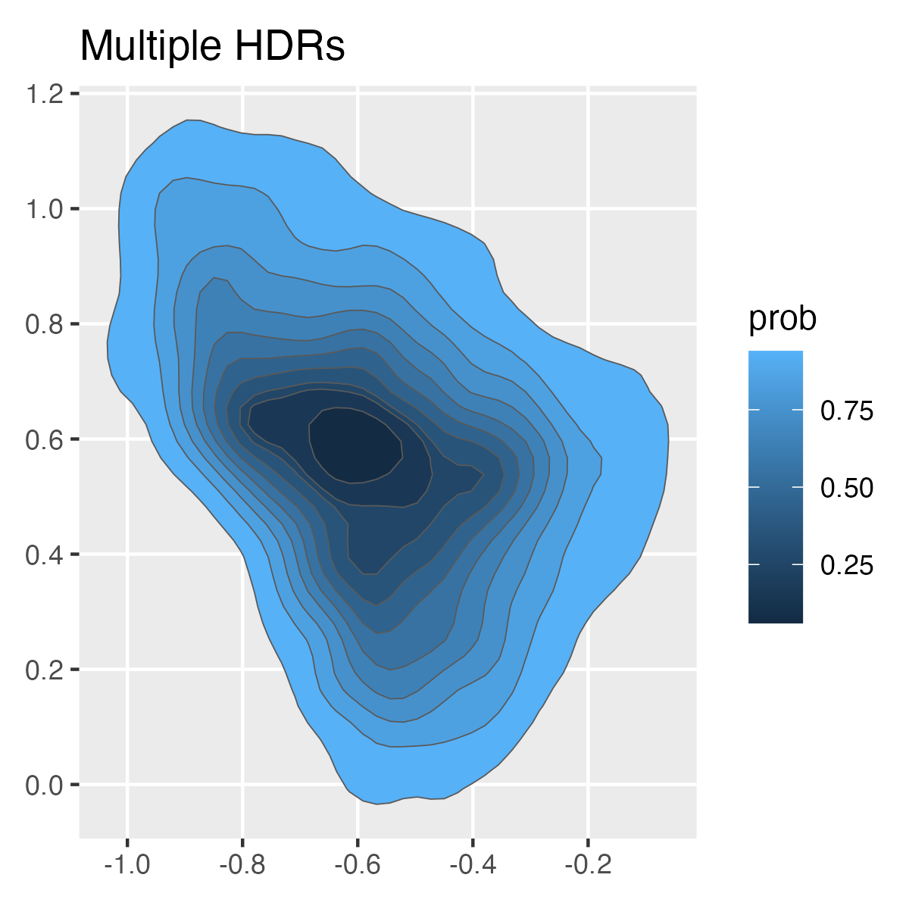
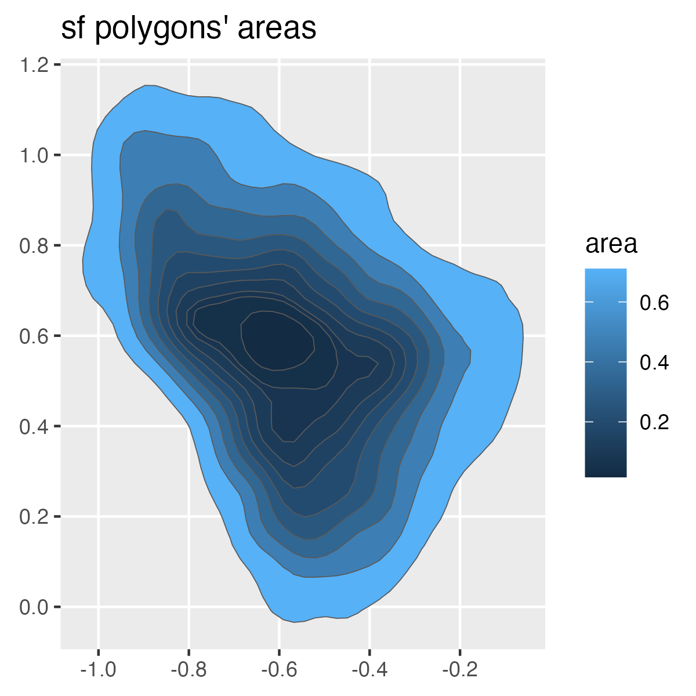
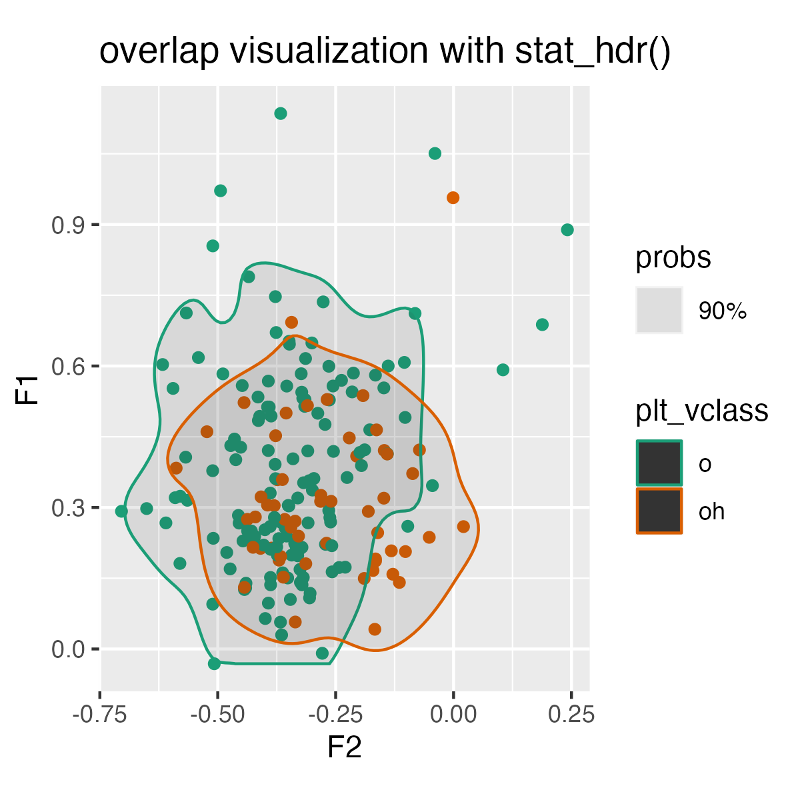
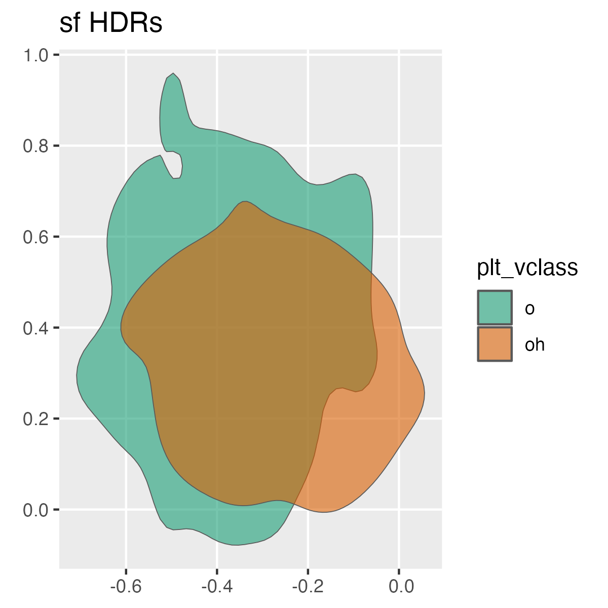
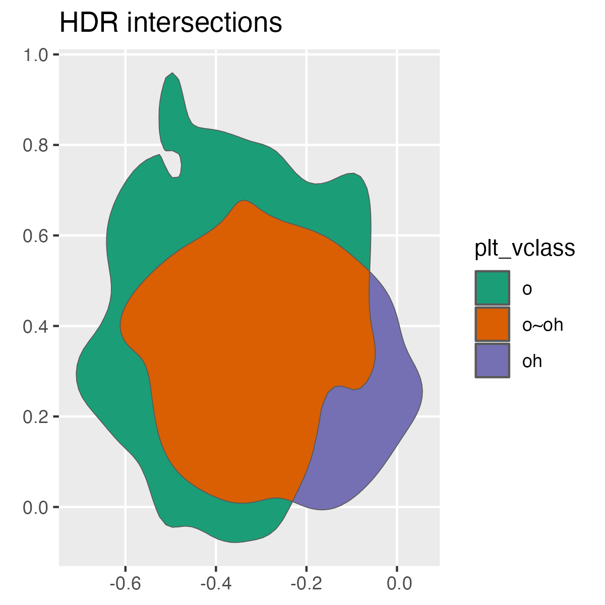

The package ggdensity1 allows for plotting interpretable bivariate densities by using highest density ranges (HDRs). For example:
library(tibble)
library(ggplot2)
library(ggdensity)
set.seed(10)
df <- tibble(
x = c(rnorm(100), rnorm(100, mean = 3)),
y = c(rnorm(100), rnorm(100, mean = 3))
)
ggplot(df, aes(x,y))+
stat_hdr()
densityarea gives direct access to these HDRs, either as data frames or as simple features, for further analysis.
Installation
You can install the development version of densityarea from GitHub with:
# install.packages("devtools")
devtools::install_github("JoFrhwld/densityarea")Example
The use case the package was initially developed for was for estimating vowel space areas.
library(densityarea)
library(dplyr)
library(tidyr)
library(sf)
data(s01)
# initial data processing
s01 |>
mutate(token = row_number()) |>
pivot_longer(F1:F2,
names_to = "formant",
values_to = "hz") |>
mutate(log_hz_c = -(log(hz)-mean(log(hz)))) |>
select(-hz) |>
pivot_wider(names_from = formant,
values_from = log_hz_c)->
s01_normRaw Data
Here’s the raw vowel space data from one speaker with a 90% HDR plotted over it.
s01_norm |>
ggplot(aes(x = F2, y = F1))+
geom_point(alpha = 0.2)+
stat_hdr(probs = 0.9,
alpha = 0.5,
fill = "steelblue",
color = "black")+
coord_fixed()+
labs(title = "stat_hdr()")
HDR Polygons
HDR polygon in a data frame.
To get the 90% HDR polygon as a simple data frame, we can use densityarea::density_polygons(). Even though this is just one speaker, we’ll still group_by() the speaker ID for the sake of generalizing to multi-speaker data.
s01_norm |>
group_by(name) |>
summarise(
poly_df = density_polygons(F2, F1, probs = 0.9)
) |>
unnest(poly_df)->
s01_poly_df
s01_poly_df |>
ggplot(aes(F2, F1))+
geom_polygon(fill = "steelblue", color = "black")+
coord_fixed()+
labs(title = "HDR polygon dataframe")
HDR polygon as an sf polygon
We can also get the sf polygon objects by setting as_sf=TRUE
s01_norm |>
group_by(name) |>
summarise(
poly_sf = density_polygons(F2, F1, probs = 0.9, as_sf = T)
) |>
unnest(poly_sf) |>
st_sf()->
s01_poly_sf
Multiple probability levels
You can get multiple probability levels at once by passing a vector of probabilities to probs. The base R function ppoints() will generate an evenly spaced number of probabilities.
s01_norm |>
group_by(name) |>
summarise(
poly_sf = density_polygons(F2, F1, probs = ppoints(10), as_sf = T)
) |>
unnest(poly_sf) |>
st_sf() |>
arrange(desc(prob)) |>
ggplot()+
geom_sf(aes(fill = prob))+
labs(title = "Multiple HDRs")
Density Areas
With a few sf functions, you can get the area of each density polygon, but there’s also a convenience function in densityarea, density_area(), that will also do this. It works the same way as density_polygons().
s01_norm |>
group_by(name) |>
summarise(
areas_df = density_area(F2, F1, probs = ppoints(10))
) |>
unnest(areas_df)->
s01_area
s01_area |>
ggplot(aes(prob, area))+
geom_point()+
geom_line()+
labs(title = "probability level vs HDR area")
You can also preserve the sf polygons in the output.
s01_norm |>
group_by(name) |>
summarise(
areas_sf = density_area(F2, F1, probs = ppoints(10), as_sf = TRUE)
) |>
unnest(areas_sf) |>
st_sf() ->
s01_area_sf
s01_area_sf |>
arrange(desc(prob)) |>
ggplot()+
geom_sf(aes(fill = area))+
labs(title = "sf polygons' areas")
Leveraging {sf}
The sf package has a lot of operations of potential use for analyzing these distributions. For example, we can calculate how much area two categories overlap in.
s01_lowback |>
ggplot(aes(F2, F1, color = plt_vclass))+
geom_point()+
stat_hdr(probs = 0.9)+
scale_color_brewer(palette = "Dark2")+
coord_fixed()+
labs(title = "overlap visualization with stat_hdr()")
We can get the sf polygons with density_polygons().
s01_lowback |>
group_by(plt_vclass) |>
summarise(
poly_sf = density_polygons(F2, F1, probs = 0.9, as_sf = T)
) |>
unnest(poly_sf) |>
st_sf()->
s01_lowback_sf
s01_lowback_sf |>
ggplot()+
geom_sf(
aes(fill = plt_vclass),
alpha = 0.6
)+
scale_fill_brewer(palette = "Dark2")+
labs(title = "sf HDRs")
Now, we can use sf::st_intersection() to get back the intersection of these two HDRs as a new polygon
s01_lowback_sf |>
st_intersection() |>
mutate(
plt_vclass = case_when(n.overlaps > 1 ~ "o~oh",
.default = plt_vclass)
)->
s01_lowback_intersect
s01_lowback_intersect |>
ggplot()+
geom_sf(
aes(fill = plt_vclass)
)+
scale_fill_brewer(palette = "Dark2")+
labs(title = "HDR intersections")
And we can get the area of each unique region with sf::st_area().
s01_lowback_intersect |>
mutate(area = st_area(geometry),
prop_area = area/sum(area)) |>
ggplot(aes(plt_vclass, prop_area))+
geom_col(aes(fill = plt_vclass))+
scale_fill_brewer(palette = "Dark2",
guide = "none")+
ylim(0,1)+
labs(title = "Proportional areas")